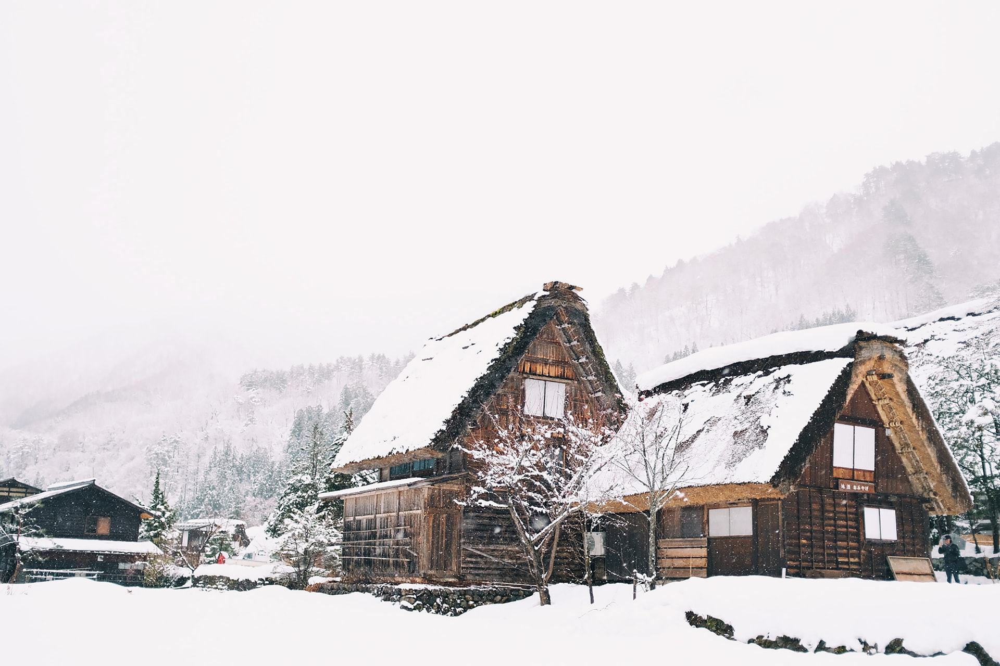
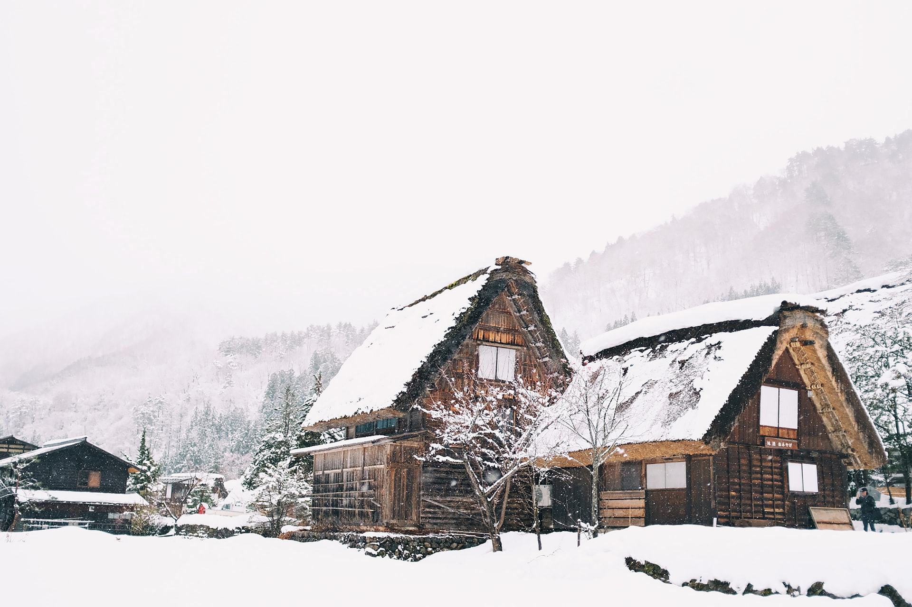

Climate Variety
-
Hokkaido
- North
- Cold winters
- Hemiboreal
-
Snow
- Sapporo
-
Shikoku and Kyushu
- South
- Warm beaches
- Subtropic
- Hot, humid summers
-
Tokyo
- Summers similar to Omaha
- Ocean moderation
 
